Vector: Magnitude & direction, notation: f, x, v,
w
Vectors v = w if they have the same
length & direction.
Origin point does not matter.
Vector addition: Parallelogram rule and Triangle rule give the same
result.
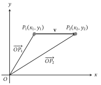
Vector subtraction.
Scalar multiple
v
of the vector v is the same whether it is collinear or
parallel.
or
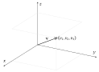
Two vectors
=
,
=
are equal iff
.
1.2n-D space
Real line:
(Set of all ordered n-tuples called n-D space).
Zero vector
1.2.0.1 Definition
If
and
in
,
and for any scalar
,
then
1.2.0.2 Theorem
If
and
are vectors in
,
and if
and
are scalars, then
1.2.0.3 Linear combination
If
is a vector in
,
then
is a linear combination of vectors
in
if it can be expressed in the from
where
are scalars and the coefficients of the linear combination.
1.3 Norm, Dot Product and Distance
in
For a vector
in
,
the norm/length/magnitude of
is
1.3.0.1 Norm of a vector
For vectors
,
in
and a scalar
,
1.3.0.2 Unit vector
For
a nonzero vector in
,
by normalising
we get a unit vector
,
with the same direction as
,
defined as
Standard unit vectors are unit vectors that point along the positive
axes of the coordinate axes.
In
,
standard unit vectors are
,
,
.
In
,
we have standard unit vectors
.
1.3.0.3 Distance in
For points
,
in
,
the distance between
and
is
Dot Product
For two vectors
and
in
,
their dot product (in geometric form) is
The component form of the dot product is
Since
,
If
,
If
,
If
,
1.3.1 Properties
We can get length of a vector in terms of its dot product:
For vectors
,
,
in
and
a scalar,
[Symmetry]
[Distributivity]
[Homogeneity]
and
[Positivity]
1.3.1.1 Cauchy-Schwarz
Inequality
If
and
are vectors in
,
then
Hence,
,
and
is always defined, where
.
1.3.1.2 Triangle Inequality
For vectors
,
and
in
and a scalar
,
[For vectors]
[For distances]
1.3.1.3 Orthogonality
Two nonzero vectors
and
in
are orthogonal if
.
This means the two vectors are perpendicular to each other, from
A nonempty set of vectors in
is an orthogonal set if all pairs of distinct vectors in the set are
orthogonal.
Equations of lines and planes
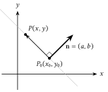
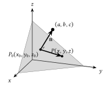
For point-normal equations, we need two things:
Coordinates of a point on the line/plane,
.
The normal from that point,
,
which is orthogonal to the line/plane.
We make use of the property
,
where
is the variable point of the line/plane.
For a line (in
):
For a plane:
If
,
then the line/plane passes through the origin.
Note that the coefficients of the line/plane are the normal vector
values.
Vector/Parametric Equations
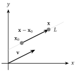
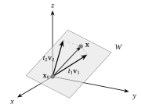
For a line containing point
and parallel to vector
,
the vector form is
and the parametric form is
For a vector containing point
and parallel to noncollinear vectors
and
,
the vector form is
and the parametric form is
If
is
,
then the line/plane passes through the origin.
2 Matrices
2.1 Notation
A square matrix,
,
of order
has
columns and
rows.
Then,
A diagonal matrix is a square matrix where all entries off the main
diagonal are 0.
If
is a diagonal matrix,
If
is an identity/unit matrix,
The transpose of an
matrix
is an
matrix
.
.
If
is a symmetric matrix, then
,
and
.
If
is a skew-symmetric matrix, then
,
and
.
Diagonal elements must be zero, because each element must be its own
negative.
2.1.1 Example
Let
be an arbitrary
non-zero skew-symmetric matrix and
be an arbitrary
non-zero symmetric matrix. Is
symmetric?
Note:
,
where
is a scalar, refers to
for
times.
If
,
then
,
the identity matrix.
We have that
First, we find the transpose of
and
:
Let
.
We calculate
:
Since
,
the matrix is symmetric.
2.2 Operations
Define
matrices
.
For two matrices
and
to be equal,
and
are of same size,
for
and
Addition and subtraction of matrices require
matrices of similar sizes and are calculated entrywise.
i.e. For
,
.
Scalar multiplication multiplies each entry by a
scalar
.
i.e. For
,
.
Basic properties:
and
Matrix
Multiplication
If
is an
matrix and
is an
matrix, then the product
is an
matrix.
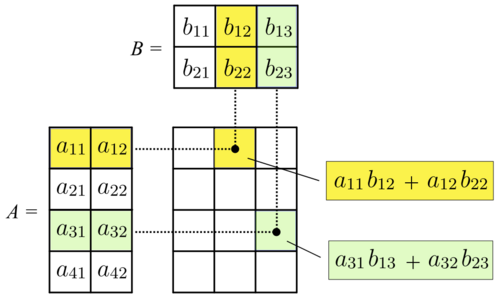
Visualisation of matrix multiplication
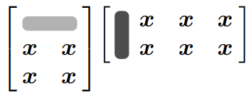
(Row
of
A)(Column
of B) = Each number
in
Dot Product method
Properties:
If
is
matrix and
is
matrix, then only if
are both products
and
defined and of the same size. Even then,
in general.
where
is an
Identity Matrix
More properties involving vectors:
Matrix Multiplication by columns
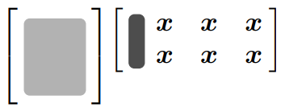
(Column
of B) = Column
of
Matrix Multiplication by rows
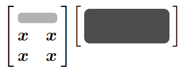
(Row
of
A)
= Row
of
Matrix multiplication as linear combination
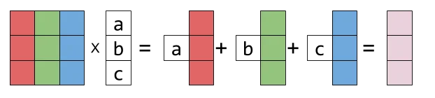
Linear combination of column vectors of
,
where the coefficients are elements of the single column
vector.
Example:
Let
and
Method 1: Multiply
with each column in
,
producing a column of
.
Method 2: Multiple each row in
with
,
producing a row of
.
Method 3: Each column
of
as a linear combination of columns of
,
with coefficients from corresponding column
of
.
Example
If the order of
is
,
is
and
is
,
then what is the order of
?
Inverse of a
matrix
An
square matrix
is invertible if
an
square matrix
s.t.
where
is the
identity matrix.
For a
square matrix
, it is invertible if and
only if
and the inverse of A is denoted by
If
,
then
is singular and is non-invertible.
If
and
are invertible matrices of the same size, then
is invertible, and